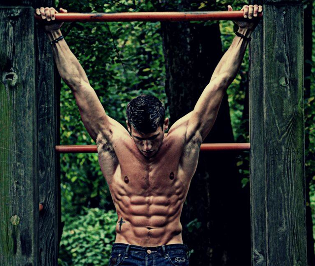
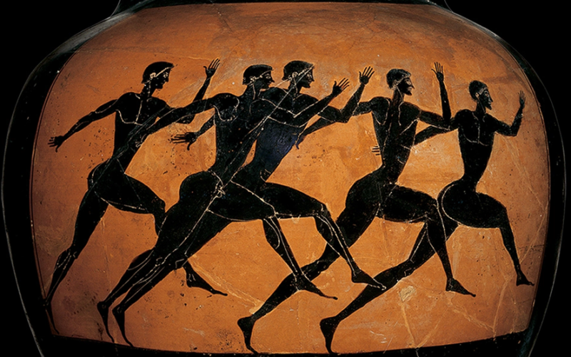
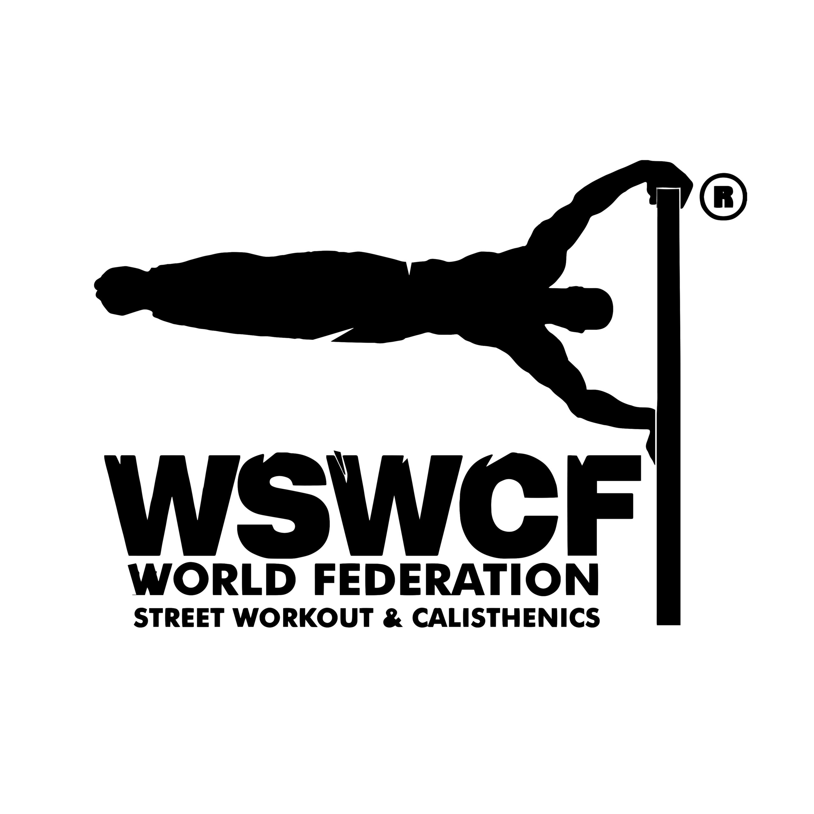

Kaj je sploh Calisthenics?
Če ste prišli na ta zavihek se sprašujete kaj sploh je Calisthenics? Calisthenics je vrsta treninga, ki se ukvarja z treningom lastne telesne teže. Beseda Calisthenics
izvira iz dveh grških besed: kállos in sthenos kar pomenita lepota in
moč.

Primer atleta, ki se ukvarja z Calisthenicsom že več kot 10 let.
Zgodovina
Calisthenics so prakticirali že v antični grčiji vključno z vojskami Alexandra Velikega in Špartanci. Prakticiran je bil tudi v antični Kitajski. Poleg dobre prehrane
v dinastiji Han so zdravniki priporočali ta šport za vzdrževanje posameznikovega zdravja.

Grki na loncu.
Sedaj, v modernejši dobi pa je začel na plano kot šport prihajati v letu 1940. Okoli leta 2008 z pojavo ene izmed največjih platform za deljenje posnetkov Youtube,
so se začeli pojavljati posnetki ljudi, ki delajo lahko nenormalne stvari z svojo lastno telesno težo. Ena izmed teh dveh atletov sta bila: Zef Zakaveli in Hannibal for King.
Ena izmed rutin Hannibal for Kinga, ter Zef Zakaveli, ki naredi 50 pull upov, 1 muscle up in 50 straight bar dipov v zaporedju.
Po tem so se počasi začele ustanavljati organizacije kot so že omenjene na začetni strani(WSWCF, GORNATION...). Danes v 2025 so organizirana tekmovanja in postopoma se
šport širi. Upam da bo čez nekaj prišlo v glavne športe sveta :).

Logotip GORNATION-a in WSWCF-a.